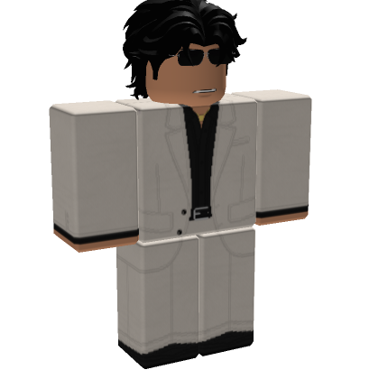
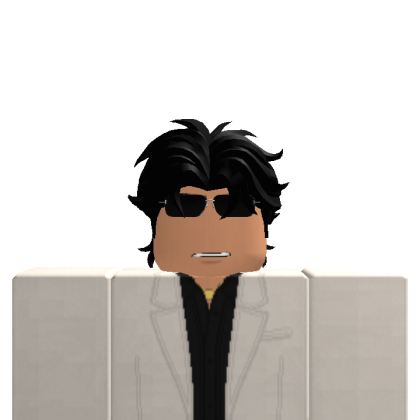

Open to collaboration · Japan · --:-- JST
Hey, I’m TopLuau.
I build things for the web, the desktop and Roblox.
I’m a full-stack developer in Japan. I run three products myself, write open-source Rust, and have been making Roblox games and systems in Luau for 6+ years. Have a look around, and message me if something here is what you need.

About
The short versionI like building the whole thing: the frontend, the backend, the servers and the deploys. That’s how I ended up running Bloxsupply, Lingucounter and Gavanor by myself.
I also write open-source Rust, like Ember IDE, a code editor, and Scrawl, a collaborative whiteboard. Both ship for Windows, macOS, Linux and Raspberry Pi.
And Roblox is still a big part of what I do: game systems, interfaces and templates in Luau.
- Languages
- Rust · TypeScript · C++ · Luau
- Runs
- 3 live products
- Open source
- Ember IDE · Scrawl · CoreLoader
- Roblox
- 6+ years
- Based in
- Japan
Things I’ve built
Roblox & Luau
hover to preview, click to watchGame systems, interfaces and templates. Some of the templates are for sale on Bloxsupply, and CoreLoader, a loading screen, is open source.
What I use
More on GitHub
live from the GitHub APIWhat people say

Say hi.
If you’ve got a project, an idea or just a question, message me. Discord is the fastest way to reach me, and I’m open to freelance work and collaboration.